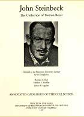

|  | John Steinbeck
The Collection of Preston Beyer: Donated to the Princeton University Library By His Daughters: Barbara A. Rice, Marilyn S. Shuffler, Lynne B. Sagalyn. Annotated Catalogue of the Collection |
| Introductory Note and Preface | Book and such like items are serviced by the Rare
Book Division of the Department.
Call number for the collection as a whole is (Ex) PS3537 .T3234 1994 which is subdivided by BEYER number. |
Manuscript items are serviced by the
Manuscript Division
of the Department.
Collection number C0768. |
PREFACE
BACKGROUND TO THE DONATION
In forming this comprehensive collection of John Steinbeck, Preston Beyer always had in mind that its ultimate home would be the library of a major research university. Since Steinbeck’s legacy would be best understood within the broad context of American twentieth century literature, placing the collection where there were complementary collections of American literature became a decisive factor in choosing Princeton. The path to this donation was a bit surprising, however.
It started at an academic conference with a casual conversation between Columbia professor Lynne Sagalyn and Princeton professor Jim Doig. Professor Sagalyn had taken the lead in exploring the question of where her father’s collection should be permanently placed. Her father was a Cornell man (class of 1934), and he had already given Cornell one Steinbeck collection. But being an indefatigable collector, he had another collection, and he was looking for a home for it. Professor Doig suggested offering it to Princeton since American literature is one of the strengths of the Library’s special collections.
Professor Sagalyn contacted Associate University Librarian for Rare Books and Special Collections, William Joyce, and after several rounds of conversation, she and her sisters decided to donate the Collection.
The Collection, consisting of about 1500 books and numerous boxes of
pamphlets, clippings, issues of magazines, as well as correspondence, was
formally received by the Library in April 1994. The exhibition opening
on January 1995 honored the donation as the largest single-author collection
to be given to the Library in recent years.
SCOPE OF THE CATALOGUE
Entries in this catalogue cover the totality of the Preston Beyer Collection at the time of donation as well as some additions made during the calendar year 1995.
The catalogue falls into three major sections:
· books and other writings by John Steinbeck
· printed materials about or related to John Steinbeck
· manuscripts — including both originals by John Steinbeck as
well as extensive materials in manuscript relating to John Steinbeck.
The foreword by Mr. Beyer lays out with great charm the whole process by which he gathered the collection and its companion now at Cornell.
In the process of compiling the catalogue we discovered some new facts about the publishing history of John Steinbeck’s writings. One such discovery has to do with his Letters to Alicia. Mr. Beyer went to great pains to collect the full series of letters first published in the newspaper Long Island Newsday. When comparing the Beyer holdings against the official listing of the series in the 1974 bibliography of John Steinbeck prepared by Adrian Goldstone and John Payne, we discovered several misprinted lines in Goldstone and Payne. That misprint leaves out several letters in the series. A full correct listing can be found in this catalog. We also discovered that no one has yet issued a collected edition of Steinbeck’s Letters to Alicia, even though a number of his other writings, both formal and informal, have been comprehensively collected and published. Clearly, the Beyer collection of the Letters presents an opportunity for the compilation of such a collected edition.
ARRANGEMENT OF ENTRIES
The basis for this catalogue is that compiled by Preston Beyer over a number of years. The Beyer catalogue provided the basic structure for what you now have before you. The level of detail that Mr. Beyer included is preserved as well. Also, all notes about a particular piece in the collection derive directly from the Beyer catalogue. For example, in the second major section (About John Steinbeck), all such notations as “JS mentioned p[age] ...” are Mr. Beyer’s notes.
To some extent, this catalogue is based on the 1980 effort of Bradford Morrow, bookseller of Santa Barbara, California. Mr. Morrow’s Catalogue Eight, John Steinbeck A Collection of Books & Manuscripts. The Harry Valentine Collection is a model of clarity of presentation as well as being remarkable in detail.
The arrangement of entries falls into three major sections, with further subdivision within each of those sections.
First, all printed material is divided from manuscript and then, the rubric of printed material was divided into two parts: the writings of Steinbeck were separated from everything else relating to him. Works by Steinbeck are arranged according to form of publication: books and pamphlets; contributions to books; articles and such like in periodicals. Then within each subdivision, the items are usually arranged by date of publication, so to mark the growth of these publications through the life of the author down to the present.
Material about or relating to John Steinbeck varies in form and content. Arrangement and sub-arrangement of this material is based on categories reflecting these varying forms. Here too the principle of chronological sub-arrangement was adopted, so to demonstrate the rising interest in Steinbeck as his career progressed as well as his strengthening influence on American and world culture.
The many boxes of manuscripts fall into two main groups: 1) originals by John Steinbeck, such as letters, drafts, etc.; and 2) original materials relating to John Steinbeck, such as the nearly half-century of correspondence between Mr. Beyer and many bibliographers, critics, collectors, biographies, librarians, friends and others concerned with the life and writings of John Steinbeck.
Just as this descriptive catalogue of the Beyer collection separates printed material from manuscript, so too does the Library assign care. The manuscripts are held by the Manuscript Division of the Department of Rare Books and Special Collections and is assigned collection number C0768. The printed books and like materials are held by the Rare Books Division of the Department.
Staff in the Department of Rare Books and Special Collections at the
Library prepared this catalogue under the general supervision of Stephen
Ferguson, Assistant University Librarian for Rare Books and Special Collections
and Curator of Rare Books. Lynne Sagalyn reviewed the preface and
other details of this publication on behalf of the family.
| Return to opening page Return to home page for Special Collections at Princeton |